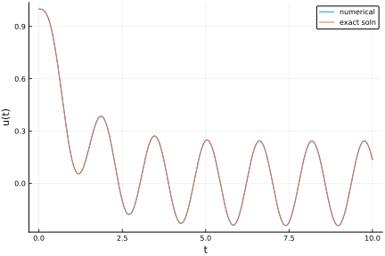
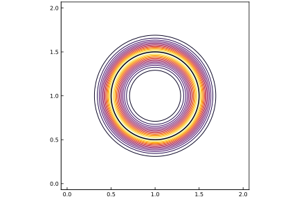

Time marching
ViscousFlow is equipped with a few classes of time marching schemes for advancing time-dependent equations.
Integrating factor systems
Integrating factor systems that we encounter in ViscousFlow are of the form
The operator $A$ may be a matrix or a scalar, but is generally independent of time. (The method of integrating factors can deal with time-dependent $A$, but we don't encounter such systems in the ViscousFlow context so we won't discuss them.) For this purpose, we use the IFRK class of solver, which stands for Integrating Factor Runge-Kutta. This method solves the part associated with $A$ exactly, via the integrating factor, and advances a modified equation by Runge-Kutta method to account for the remaining part $r_1$.
We discussed the construction of the integrating factor in the context of fields in Fields. But first, let's give an example of how we can solve a simpler problem with just a single scalar-valued $u$. The example we will solve is
The exact solution is easily obtained:
Let's solve it numerically, so we can evaluate the accuracy of the solver. We should note that the integrating factor for this system is $e^{-\alpha t}$.
For demonstration, we will set $\alpha = 1$, $\omega = 4$, and $u_0 = 1$.
julia> α = 1; ω = 4; u₀ = 1.0;Here is the exact solution for later comparison
julia> uex(t) = u₀*exp(-α*t) + (α*(cos(ω*t)-exp(-α*t))+ω*sin(ω*t))/(α^2+ω^2)
uex (generic function with 1 method)The first steps are to define operators that provide the integrating factor and the right-hand side of the equations. For the integrating factor, we extend the definition of plan_intfact from Fields.
julia> ViscousFlow.plan_intfact(t::Float64,u::Vector{Float64}) = exp(-α*t);Note that we have defined this extended form of plan_intfact to adhere to the standard form, accepting arguments for time t and the state vector u, even though the state vector isn't strictly needed here. The state 'vector' in this problem is actually only a scalar, of course. But the time marching method does not accept scalar-type states currently, so we will make u a 1-element vector to use the ViscousFlow tools.
Now let us define the right-hand side function. This function should also adhere to the standard form, which requires the state vector u and the time t as arguments.
julia> r₁(u::Vector{Float64},t::Float64) = cos(ω*t);We also need to set the time-step size ($0.01$) and the initial condition. For the latter, we set up the state vector as a 1-element vector, as discussed earlier:
julia> Δt = 0.01;
julia> u = [u₀];We can now construct the integrator. We supply a form of the state vector (for use as a template for pre-allocating space for internal storage variables), the time-step size, and the definitions of the integrating factor and the right-hand side function:
julia> ifrk = IFRK(u,Δt,plan_intfact,r₁,rk=TimeMarching.RK31)
Order-3 IF-RK integator with
State of type Array{Float64,1}
Time step size 0.01We have set the time step size to $0.01$. We have also specified that the Runge-Kutta method to be used is a third-order method, RK31, specially designed for storing as few different versions of the integrating factor as necessary. This is actually the default method, so we could have omitted this keyword argument. There are other choices, as well, such as TimeMarching.Euler for the forward Euler method.
Now we can solve the system. The integrator has a simple form, accepting as arguments the current time and state, and returning the updated versions of these at the end of the step. We place this integrator inside of a loop and store the results. (Since u is set up as a 1-element vector, then we will store only the element of this vector.)
julia> uhist = Float64[]; # for storing the solution
julia> T = 0:Δt:10;
julia> t = 0.0;
julia> for ti in T
push!(uhist,u[1]) # storage
global t, u = ifrk(t,u) # advancement by one step by the integrator
endNow we can plot the result and compare it with the exact solution.
julia> plot(T,uhist,label="numerical",xlabel="t",ylabel="u(t)")
Plot{Plots.PyPlotBackend() n=1}
julia> plot!(T,uex.(T),label="exact soln")
Plot{Plots.PyPlotBackend() n=2}
As we can see, the results are nearly indistinguishable.
Constrained systems
Constrained integrating factor systems
Constrained integrating factor systems that we encounter in ViscousFlow are of the form
where $f$ is again the Lagrange multiplier for enforcing the constraints on $u$. Now, we combine the ideas of the last two sections into a single integrator.
Let's demonstrate this on the example of heat diffusion from a circular ring whose temperature is held constant. In this case, $A$ is the discrete Laplace operator, $L$, times the heat diffusivity, $r_1$ is zero (in the absence of volumetric heating sources), and $r_2$ is the temperature of the ring. The operators $B_1^T$ and $B_2$ will be the regularization and interpolation operators between discrete point-wise data on the ring and the field data.
The ring will have radius $1/2$ and fixed temperature $1$, and the heat diffusivity is $1$. (In other words, the problem has been non-dimensionalized by the diameter of the circle, the dimensional ring temperature, and the dimensional diffusivity.)
First, we will construct a field to accept the temperature on
julia> nx = 129; ny = 129; Lx = 2.0; Δx = Lx/(nx-2);
julia> u₀ = Nodes(Dual,(nx,ny)); # field initial conditionNow set up a ring of points on the circle at center $(1,1)$.
julia> n = 128; θ = range(0,stop=2π,length=n+1);
julia> R = 0.5; xb = 1.0 .+ R*cos.(θ); yb = 1.0 .+ R*sin.(θ);
julia> X = VectorData(xb[1:n],yb[1:n]);
julia> f = ScalarData(X); # to be used as the Lagrange multiplierFrom this, construct the regularization and interpolation operators in their usual symmetric form, and then set up a routine that will provide these operators inside the integrator:
julia> reg = Regularize(X,Δx;issymmetric=true)
Symmetric regularization/interpolation operator with non-filtered interpolation
128 points in grid with cell area 0.000248
julia> Hmat, Emat = RegularizationMatrix(reg,f,u₀);
julia> plan_constraints(u::Nodes{Dual,nx,ny},t::Float64) = Hmat, Emat
plan_constraints (generic function with 1 method)Now set up the right-hand side operators. Both must take the standard form, with arguments of the types of u and t. For $r_1$, we will simply set it to a field of zeros in the same type as u. For $r_2$, we set the result uniformly to $1$.
julia> r₁(u::Nodes{T,NX,NY},t::Float64) where {T,NX,NY} = Nodes(T,u); # sets to zeros
julia> r₂(u::Nodes{T,NX,NY},t::Float64) where {T,NX,NY} = 1.0; # sets uniformly to 1.0We will set the time-step size to a large value ($1.0$) for demonstration purposes. The method remains stable for any choice. We also initialize time t and the state u:
julia> Δt = 1.0;
julia> t = 0.0;
julia> u = deepcopy(u₀);Now we can construct the integrator. We supply examples for the state u and the Lagrange multiplier data f, the time-step size, the constructor for the integrating factor, a tuple of the operators for computing the actions of $B_1^T$ and $B_2$ on data of type f and u, respectively (which, in this case, are matrices Hmat and Emat), and a tuple of the right-hand side functions.
julia> ifherk = IFHERK(u,f,Δt,plan_intfact,plan_constraints,(r₁,r₂),rk=TimeMarching.Euler)
Order-1 IF-HERK integrator with
State of type Nodes{Dual,129,129}
Force of type ScalarData{128}
Time step size 1.0Here we've set the method to forward Euler. The resulting integrator accepts as arguments the current time t and the current state u, and returns the time, state, and Lagrange multiplier data at the end of the time step.
Now, let's advance the system. We'll also time it.
julia> @time for i = 1:20
global t, u, f = ifherk(t,u)
end
3.084480 seconds (1.51 M allocations: 127.808 MiB, 2.00% gc time)Now let's plot it
julia> xg, yg = coordinates(u,dx=Δx);
julia> plot(xg,yg,u)
Plot{Plots.PyPlotBackend() n=1}
julia> plot!(xb,yb,linecolor=:black,linewidth=1.5)
Plot{Plots.PyPlotBackend() n=2}
From a side view, we can see that it enforces the boundary condition:
julia> plot(xg,u[65,:],xlabel="x",ylabel="u(x,1)")
Plot{Plots.PyPlotBackend() n=1}
Methods
ViscousFlow.TimeMarching.IFHERK — Type.IFHERK(u,f,Δt,plan_intfact,B₁ᵀ,B₂,r₁,r₂;[tol=1e-3],[issymmetric=false],[rk::RKParams=RK31])Construct an integrator to advance a system of the form
du/dt - Au = -B₁ᵀf + r₁(u,t) B₂u = r₂(u,t)
The resulting integrator will advance the system (u,f) by one time step, Δt. The optional argument tol sets the tolerance of iterative saddle-point solution, if applicable.
Arguments
u: example of state vector dataf: example of constraint force vector dataΔt: time-step sizeplan_intfact: constructor to set up integrating factor operator forAthat will act on typeu(by left multiplication) and return same type asuplan_constraints: constructor to set up theB₁ᵀ: operator acting on typefand returning typeuB₂: operator acting on typeuand returning typefr₁: operator acting on typeuandtand returningur₂: operator acting on typeuandtand returning typef
ViscousFlow.TimeMarching.IFRK — Type.IFRK(u,Δt,plan_intfact,r₁;[rk::RKParams=RK31])Construct an integrator to advance a system of the form
du/dt - Au = r₁(u,t)
The resulting integrator will advance the state u by one time step, Δt.
Arguments
u: example of state vector dataΔt: time-step sizeplan_intfact: constructor to set up integrating factor operator forAthat will act on typeu(by left multiplication) and return same type asur₁: operator acting on typeuandtand returningu
ViscousFlow.TimeMarching.RK — Type.RK(u,Δt,r₁;[rk::RKParams=RK31])Construct an integrator to advance a system of the form
du/dt = r₁(u,t)
The resulting integrator will advance the state u by one time step, Δt.
Arguments
u: example of state vector dataΔt: time-step sizer₁: operator acting on typeuandtand returningu
ViscousFlow.TimeMarching.System — Type.Abstract type for a system of ODEs